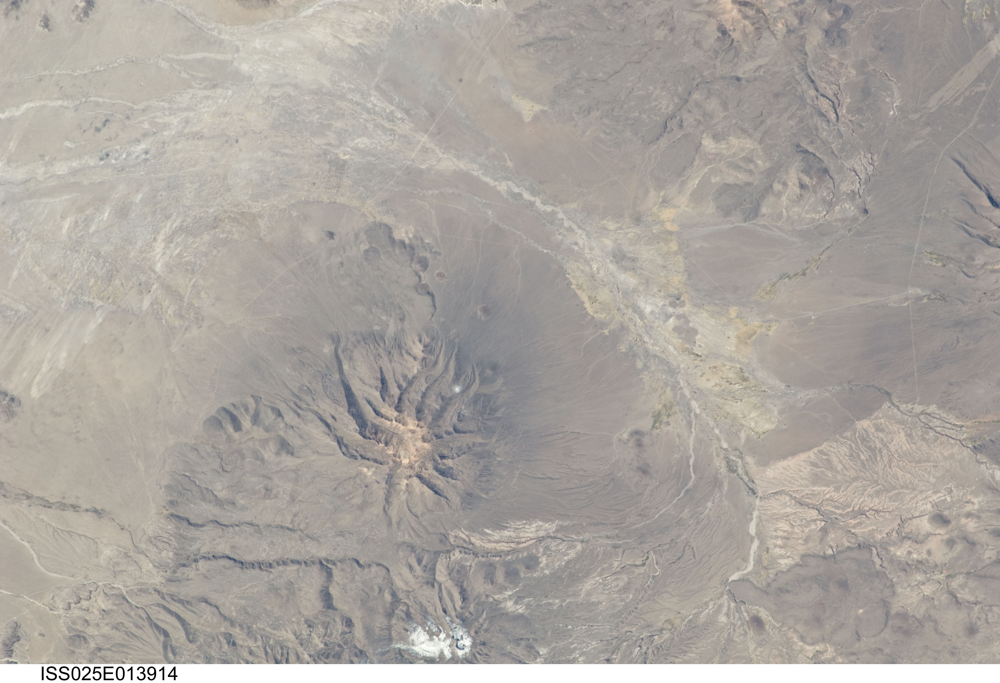
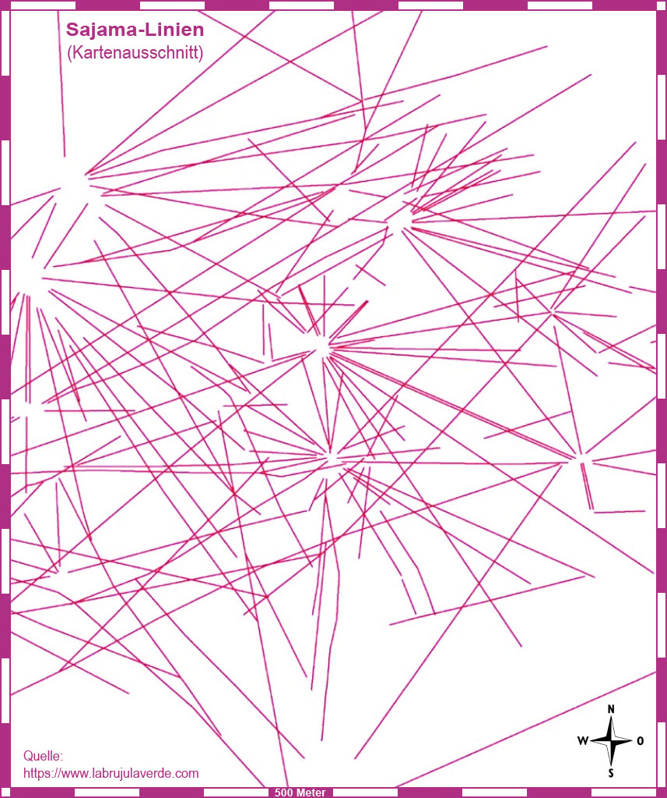

Zusammenfassung
Die Sajama-Linien gehören zu den eindrucksvollsten und am wenigsten bekannten Geoglyphen der Welt. Im Westen Boliviens bilden sie ein gigantisches Netz aus schnurgeraden Schneisen, die durch das Abtragen dunkler Oberflächenmaterialien entstanden und die hellere Erde darunter freilegen. Anders als die berühmten Nazca-Figuren zeigen die Sajama-Linien keine Tiere oder Symbole, sondern vor allem eines: Richtung, Wiederholung und fast schon unmenschliche Geradlinigkeit.


Was über die Linien gesichert ist
Die Linien liegen in der Region um den Nevado Sajama im bolivianischen Altiplano. Forschungen und Dokumentationen beschreiben ein Netz, das sich über ungefähr 22.525 Quadratkilometer erstreckt — also eine Fläche, die die Nazca-Linien deutlich übertrifft. Ihre Gesamtstrecke wird auf rund 16.000 Kilometer geschätzt. Einige einzelne Linien ziehen sich zehn oder zwanzig Kilometer weit und bleiben dabei bemerkenswert gerade, obwohl das Terrain keineswegs perfekt eben ist.
- Ort: westliches Bolivien / Altiplano / Region Sajama
- Form: tausende fast perfekt gerade Bodenlinien
- Technik: dunkle Vegetation und Oberflächenmaterial entfernt, hellerer Untergrund freigelegt
- Alter: Nutzung und Entstehung über mehr als 3.000 Jahre vermutet
- Dimension: ca. 22.525 km² / rund 16.000 km Linienlänge
- Status: echtes archäologisches Kultur- und Rituallandschafts-Rätsel
Warum diese Geradlinigkeit so irritiert
Fast jede Person, die erstmals Luftbilder der Sajama-Linien sieht, hat denselben Gedanken: Wie kriegt man das ohne moderne Vermessung so hin? Die Linien laufen nicht einfach zufällig von Dorf zu Dorf. Sie durchqueren die Landschaft über lange Strecken, schneiden Hügel und Senken und behalten dabei eine Präzision, die man intuitiv eher mit moderner Planung verbindet.
Natürlich ist das kein Beweis für verlorene Hochtechnologie. Aber es ist ein echter Grund zum Staunen. Denn selbst wenn man annimmt, dass lokale Gemeinschaften diese Wege mit Landmarken, Blickachsen und ritueller Wiederholung anlegten, bleibt die schiere Masse des Systems extrem beeindruckend. Das ist keine Einzelspur. Das ist ein gigantisches, kollektiv gepflegtes Landschaftsprojekt.
Die starke archäologische Lesart
Viele Forschende deuten die Sajama-Linien als Teil einer heiligen und sozialen Infrastruktur. Entlang des Netzes finden sich Hinweise auf wak’as (heilige Orte), chullpas (Grabtürme), Siedlungen und Wegpunkte. Die Linien könnten also über Jahrhunderte als Pilgerpfade, Prozessionswege, territoriale Marker oder als Verbindungen zwischen spirituell bedeutsamen Orten genutzt worden sein.
Diese Erklärung ist stark, weil sie die Linien nicht als isoliertes Wunder behandelt, sondern als Ausdruck einer Landschaft, die religiös gelesen und praktisch begangen wurde. Und trotzdem löst das nicht alles. Denn auch wenn wir das Warum grob erfassen, bleibt das Wie genau bei dieser Größe faszinierend offen.
Mystery-Lesart: Landschaft als Signal
Und jetzt kommt die Sourkraut-Seite der Akte. Wenn ein System über Jahrtausende hinweg in die Erde geschrieben wird, riesige Flächen überzieht und erst aus erhöhter Perspektive wirklich als Ganzes lesbar wird, dann öffnet das automatisch die Tür für spekulativere Fragen. Waren diese Linien nur für Menschen gedacht? Oder auch für Götter, Ahnen, Berge, Sterne — oder für etwas, das von oben blickt?
Gerade weil die Sajama-Linien nicht wie figürliche Kunst, sondern wie absichtsvolle Ausrichtung wirken, laden sie zu Deutungen als rituelles Navigationssystem, als kosmische Ordnung oder als gewaltige Signatur einer spirituell codierten Landschaft ein. Das klingt wild, aber es ist nicht völlig aus der Luft gegriffen: In den Anden waren Berge, Richtungen und heilige Orte eng mit Weltbild und Ritual verbunden.
Warum der Vergleich mit Nazca hinkt — und trotzdem hilft
Die Sajama-Linien werden oft als „das bolivianische Nazca“ beschrieben. Das hilft als Einstieg, ist aber eigentlich fast unfair. Nazca punktet mit ikonischen Figuren. Sajama punktet mit Maßstab. Es ist weniger Kunstwerk im engeren Sinne und mehr ein riesiges Netz aus Bewegung, Ritual und Raumordnung. Genau das macht den Fall subtiler und vielleicht für viele auch noch unheimlicher.
Bei Nazca denkt man sofort an Bilder. Bei Sajama denkt man an System. Und Systeme üben ihren eigenen Sog aus — besonders dann, wenn ihre innere Logik nur teilweise verstanden ist.
Schutz, Forschung und offenes Ende
Moderne Forschungsprojekte und digitale Kartierungen haben versucht, die Sajama-Linien präziser zu dokumentieren und zu schützen. Das ist wichtig, weil Erosion, Entwicklung und unkontrollierter Tourismus diese fragile Kulturlandschaft bedrohen können. Gleichzeitig zeigt gerade diese wissenschaftliche Arbeit, dass der Fall keineswegs erledigt ist. Je besser das Netz kartiert wird, desto deutlicher wird oft erst, wie komplex es wirklich ist.
Und genau deshalb bleibt die Akte offen. Nicht, weil wir gar nichts wissen — sondern weil wir genug wissen, um zu begreifen, wie außergewöhnlich das Ganze ist.
Sourkraut-Briefing Fazit
Die Sajama-Linien sind kein billiger Mystery-Hype, sondern ein echtes Monument menschlicher Ausdauer, Präzision und spiritueller Raumordnung. Die nüchterne Forschung liefert starke Ansätze: Pilgerwege, heilige Verbindungen, soziale und rituelle Landschaft. Aber selbst diese gute Erklärung nimmt dem Fall nicht seine Wucht. Im Gegenteil. Denn wenn Menschen über Jahrtausende hinweg eine ganze Region so exakt einschreiben, dann schaut man auf mehr als Wege im Staub. Man schaut auf eine Botschaft in Erdgröße — und wir verstehen sie bis heute nur in Fragmenten.